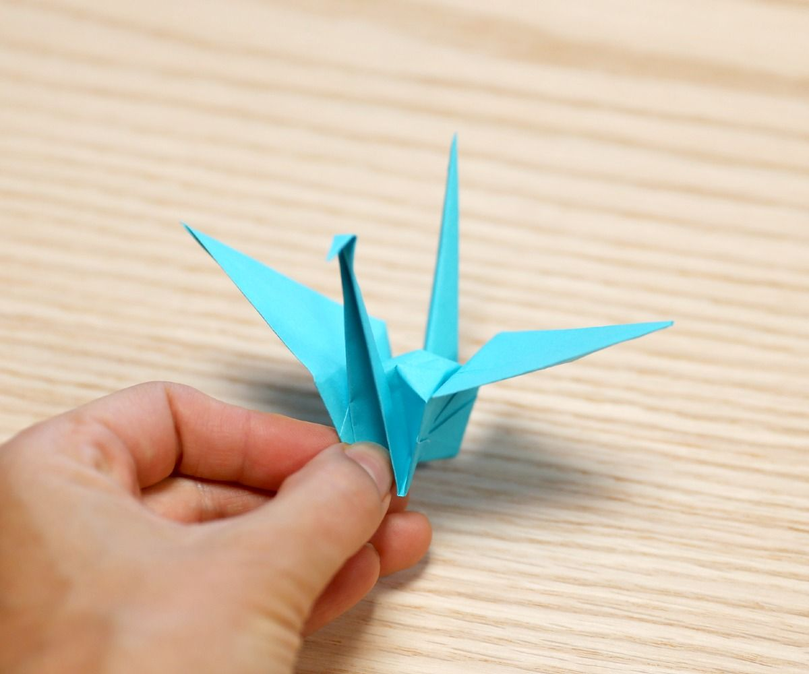

折纸鹤可以从一张正方形纸开始。准备好纸张后，先对齐边角，再压实折痕。下面按方形底、鸟形底和头尾翅膀三个部分说明；如果某一层没有折齐，可以先展开这一处检查，不必继续硬拉。
先把折痕整理成方形底
纸张有色的一面朝上，沿两条对角线分别对折后打开。翻到另一面，再沿横向和纵向分别对折后打开。这样得到的两组折痕方向不同，后面收拢纸张时会用到它们。
让有色面朝下，一角朝向自己。将左右两角沿已有折痕向这个角收拢，再把上方的角压下，整理成四层的方形底。边角应尽量重合，开口朝向自己。

沿中线折出鸟形底
在方形底的一面，将上层的左右边折向中线，再将上方三角折下，压出折痕后展开这三处。提起朝向自己的上层纸角，沿刚才的折痕向上打开，让两侧向内收，压成细长的菱形。翻面后重复同样的折叠。
接着，把菱形上层的左右边再次折向中线；翻面重复，使两侧都变窄。打开上层时，要辨认纸层和已有折痕，避免连同下面的纸层一起提起。
整理头、尾和翅膀
将上层从右向左翻折，像翻书页一样；翻面重复。把下方细长的尖端向上折起，翻面后也这样做，再重复翻页式折叠。向两侧拉出细长的纸角，分别形成颈部和尾部，将其中一端向下折出头部。
把两侧翅膀向下折，轻轻向外展开，再整理身体底部，让纸鹤形成支撑。展开时不要过度拉扯，以免纸层撕裂。两翼的位置和折痕可以逐步调整。

这套折法的重点是边角对齐、折痕方向和纸层顺序。遇到形状不一致时，先检查是哪一层或哪条折痕发生了偏移，再返回相应位置调整。